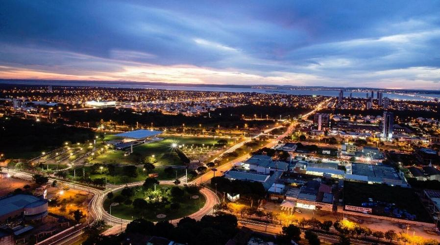
Palmas é a última cidade do século XX completamente planejada, já que a cidade nasceu e foi projetada desde o início para ser a capital do estado do Tocantins, sendo também a mais nova capital estadual do país. O município caracteriza-se também por ter a melhor qualidade de vida entre as capitais e municípios do norte brasileiro.
O crescimento de Palmas foi demasiado durante a década de 1990. Em 1991 a cidade tinha uma população de 24.261 habitantes. No ano de 2000, a cidade já contava com 130.528 habitantes. Sua urbanização também cresceu nos últimos anos.
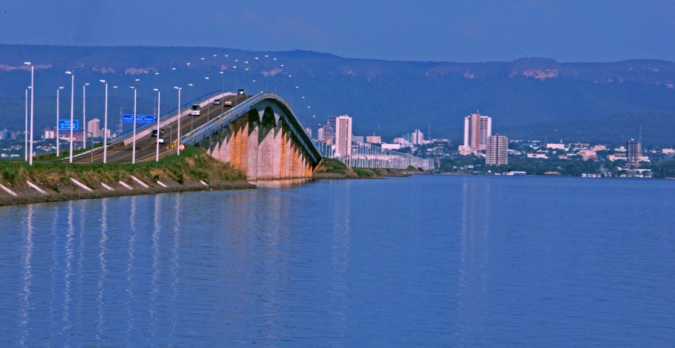
Sobre Palmas
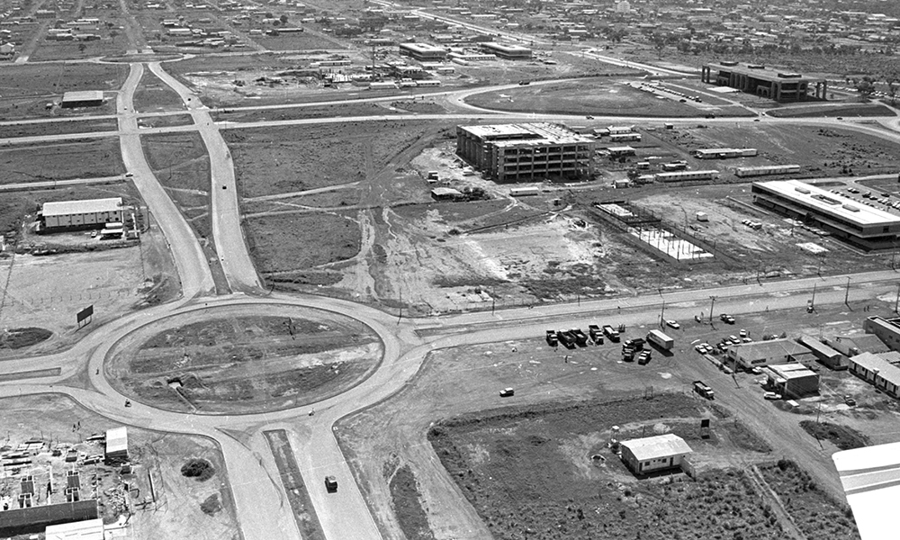
Palmas é um município brasileiro, sendo a capital e também a maior cidade do estado do Tocantins.
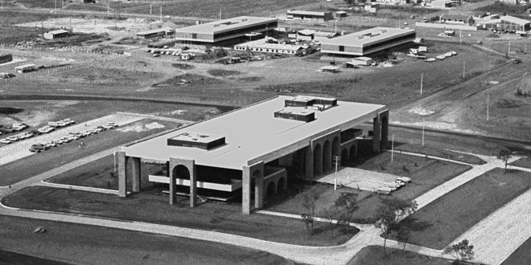
A cidade foi fundada em 20 de maio de 1989, logo após a criação do Tocantins pela Constituição de 1988, pelo governador José Wilson Siqueira Campos que encarregou, mediante contrato, os arquitetos Luís Fernando Cruvinel Teixeira e Walfredo Antunes de Oliveira Filho, para a realização do projeto arquitetônico e urbanístico.
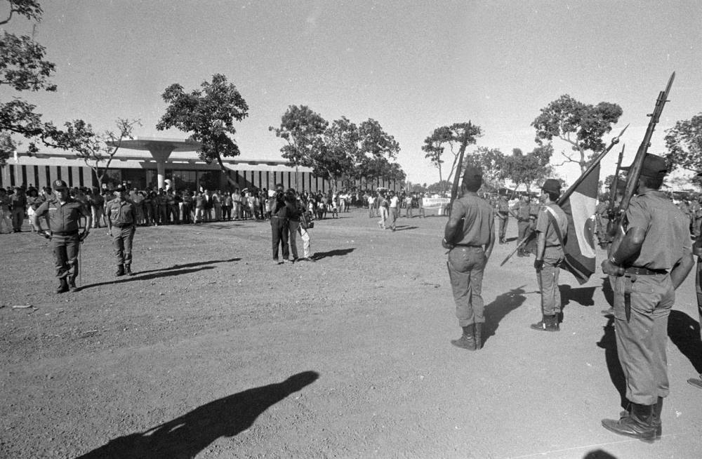
A partir daí, a cidade começou a ser construída pelos trabalhadores que vieram do interior do Tocantins e de vários outros estados do país. Entretanto, somente a partir do dia 1° de janeiro de 1990, é que Palmas passou a ser a capital definitiva do estado, já que antes a cidade ainda não possuía condições físicas de sediar o governo estadual, que estava alocado temporariamente no município vizinho de Miracema do Tocantins.
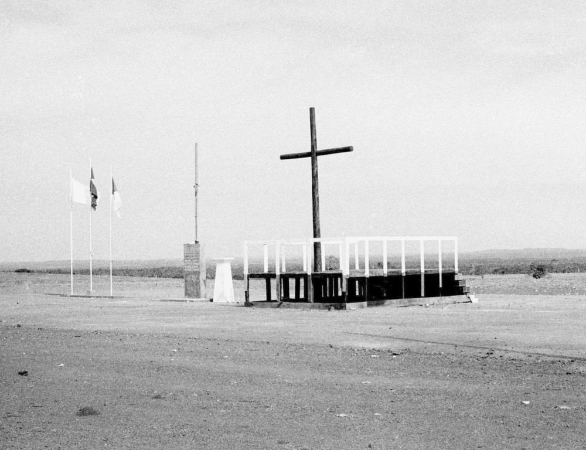
Lazer
Lista dos Lugares para se Visitar em Palmas:
Parque Cesamar
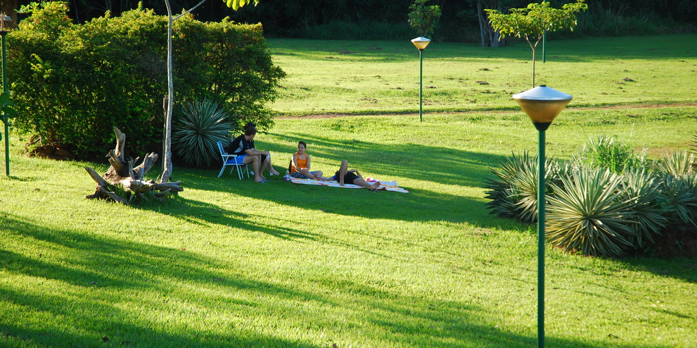
Criado em 1998, o Parque Cesamar proporciona à população de Palmas um espaço de convívio para a melhoria da qualidade de vida. Possui pista para caminhadas, equipamentos para a prática esportiva e espaços de diversão para crianças e adultos. Ainda no parque fica a Casa Suçuapara, que foi sede da primeira Prefeitura e Câmara Municipal de Palmas.
Praia da Graciosa
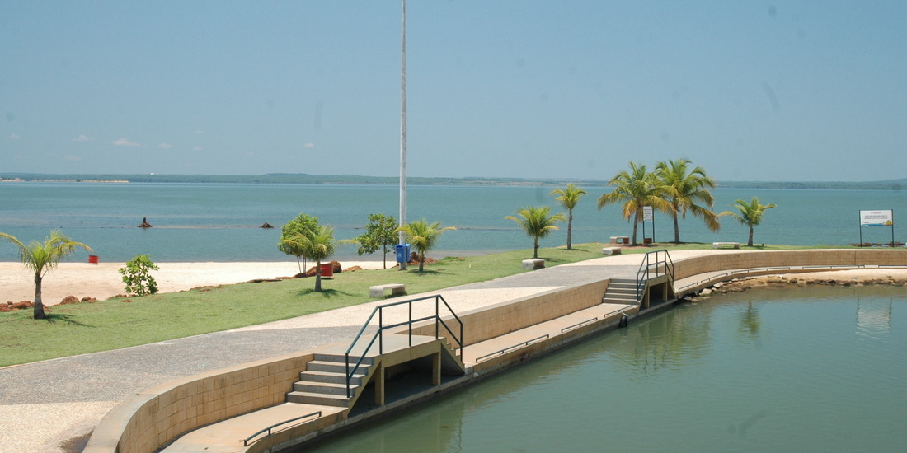
Palmas possui várias opções de praias, como a Praia Graciosa que é muito utilizada para realizar eventos culturais, de lazer, esportivos e náuticos. A praia dispõe de uma extensa orla dotada de boa estrutura como banheiros, quadras de esportes, parques infantis, área de camping, posto policial, marina com atracadouro, além da oferta serviços de bares e restaurantes.
Espaço Cultural José Gomes Sobrinho
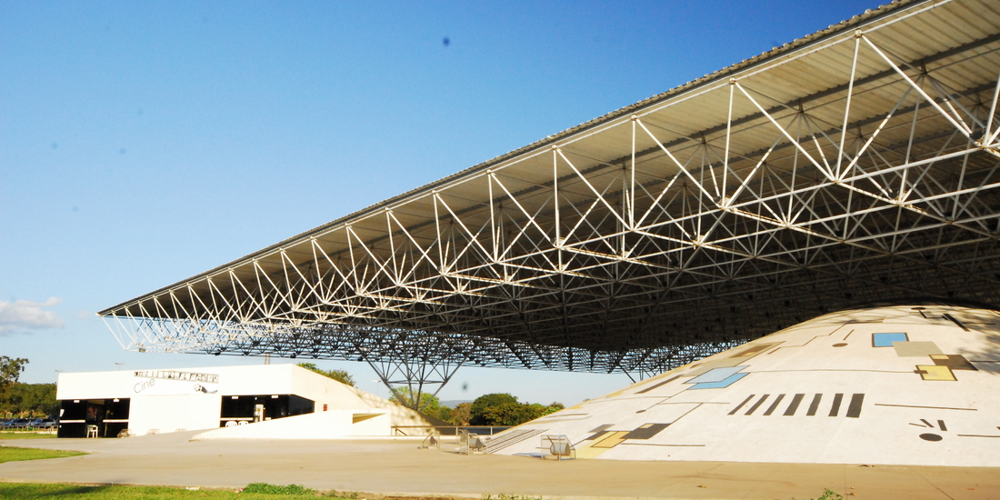
Construído em linhas de arquitetura moderna por Paulo Henrique Paranhos, o Espaço Cultural foi nomeado em homenagem ao poeta José Gomes Sobrinho. Ele dispõe de um teatro com capacidade para 500 pessoas, uma sala de cinema, uma biblioteca, um centro de criatividade e uma grande praça, palco de feiras, shows e eventos culturais.
Praia do Prata
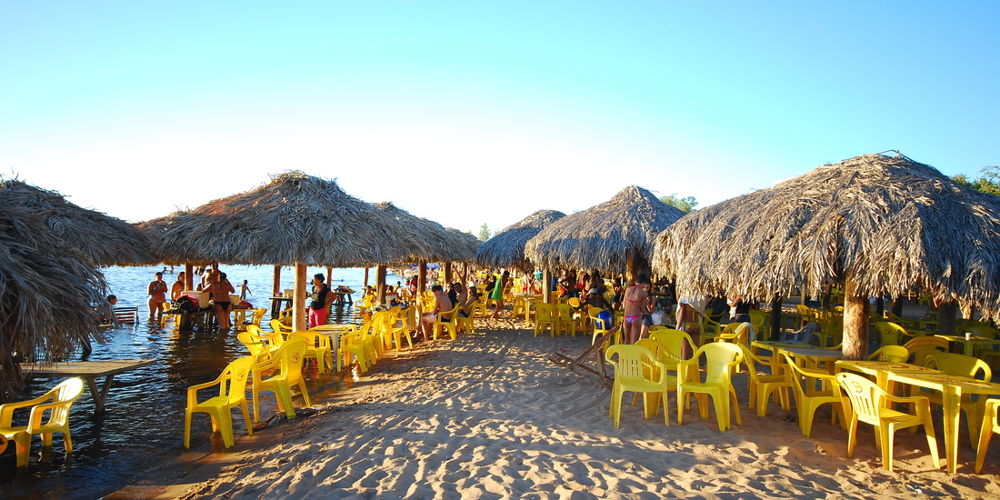
Se está passeando por Palmas, a Praia do Prata é parada obrigatória para quem quer aproveitar um ambiente familiar às margens do lago e se deliciar com a boa gastronomia tocantinense. A Praia, que recebe turistas e visitantes desde julho de 2003, é a mais frequentada da cidade, principalmente nos finais de semana, e está localizada a nove quilômetros da Praça dos Girassóis.
Praça dos Girassóis
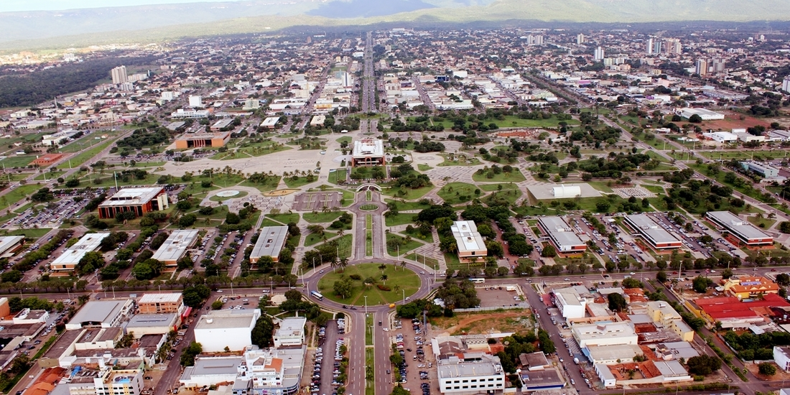
Com 571 mil metros quadrados, a Praça dos Girassóis é a maior da América latina e a segunda maior praça urbana do mundo, sendo superada apenas pela Praça Merdeka, que fica em Jacarta, na Indonésia. Começou a ser construída em 18 de outubro de 1999 e contou com 800 operários trabalhando para erguer o cartão postal da capital Palmas.
A Praça dos Girassóis foi inaugurada no dia 7 de setembro de 2000 com algumas obras ainda em andamento.
Culinária
Lista dos Melhores Restaurantes de Palmas:
Cabana do Lago
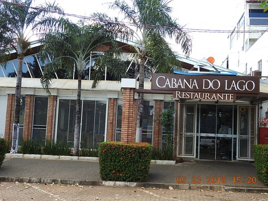
Vantagens:
Para levar, Reservas, Restaurante privativo, Lugares para sentar, Televisão, Cadeiras para bebês, Acesso para cadeirantes, Serve bebida alcoólica, Bar completo, Wi-fi gratuito, Aceita cartão de crédito, Serviço de mesa.
Restaurante TABU
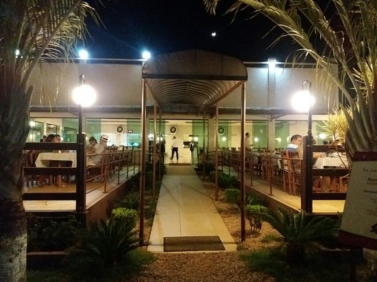
Vantagens:
Para levar, Reservas, Mesas ao ar livre, Lugares para sentar, Estacionamento disponível, Cadeiras para bebês, Acesso para cadeirantes, Serve bebida alcoólica, Wi-fi gratuito, Aceita cartão de crédito, Serviço de mesa.
Restaurante Fogão a Lenha
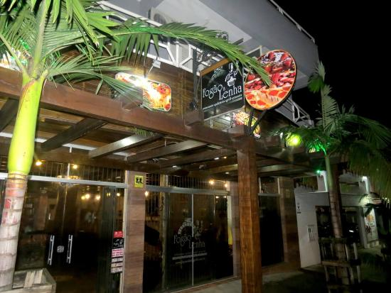
Vantagens:
Entrega, Para levar, Reservas, Bufê, Lugares para sentar, Estacionamento disponível, Acesso para cadeirantes, Serve bebida alcoólica, Vinho e cerveja, Aceita cartão de crédito, Serviço de mesa, Cadeiras para bebês, Bar completo, Wi-fi gratuito.
Restaurante Quadra Contemporanea
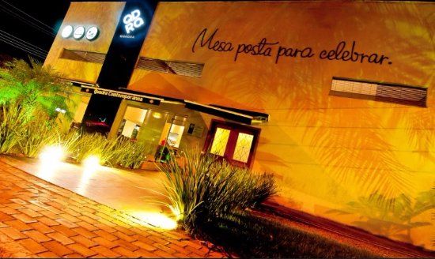
Vantagens:
Lugares para sentar, Estacionamento na rua, Cadeiras para bebês, Acesso para cadeirantes, Serve bebida alcoólica, Vinho e cerveja, Aceita American Express, Aceita MasterCard, Aceita Visa, Wi-fi gratuito, Reservas, Aceita cartão de crédito, Serviço de mesa, Familiar.
Hospedagem
Lista dos Melhores Hoteis de Palmas:
Céu Palace Hotel
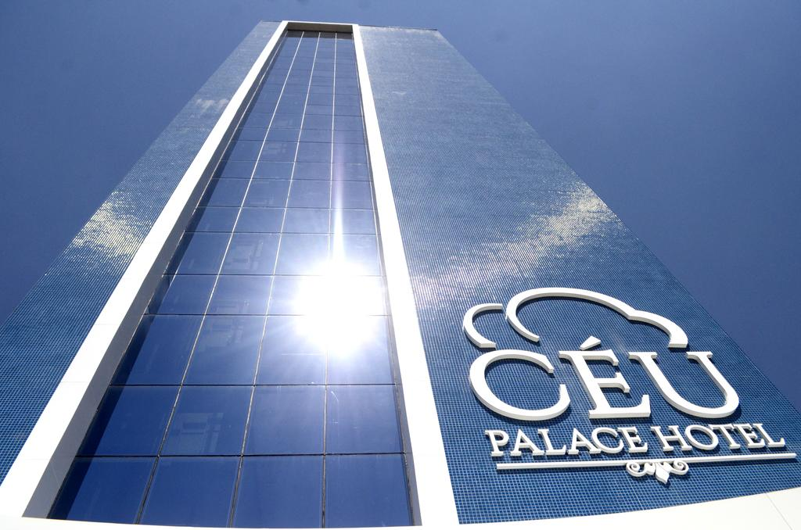
Vantagens:
O Céu Palace Hotel oferece quartos com Wi-Fi gratuito em Palmas em uma ótima localização, a 7 km da Estação Rodoviária de Palmas. Hospedando-se neste hotel 3 estrelas, você pode apreciar uma vista do lago do conforto do seu quarto e usufruir de uma academia. O Espaço Cultural de Palmas fica a 6 minutos a pé da propriedade.
Hotel Roma
 Vantagens:
Apresentando um lounge compartilhado, jardim e vista da cidade, o Hotel Roma está situado em Palmas, a 12 km da Estação Rodoviária de Palmas. Entre as comodidades da propriedade, você encontrará recepção e serviço de quarto 24 horas, além de Wi-Fi gratuito em toda a propriedade. O hotel dispõe de quartos família.
Vantagens:
Apresentando um lounge compartilhado, jardim e vista da cidade, o Hotel Roma está situado em Palmas, a 12 km da Estação Rodoviária de Palmas. Entre as comodidades da propriedade, você encontrará recepção e serviço de quarto 24 horas, além de Wi-Fi gratuito em toda a propriedade. O hotel dispõe de quartos família.
Ibis Hotel
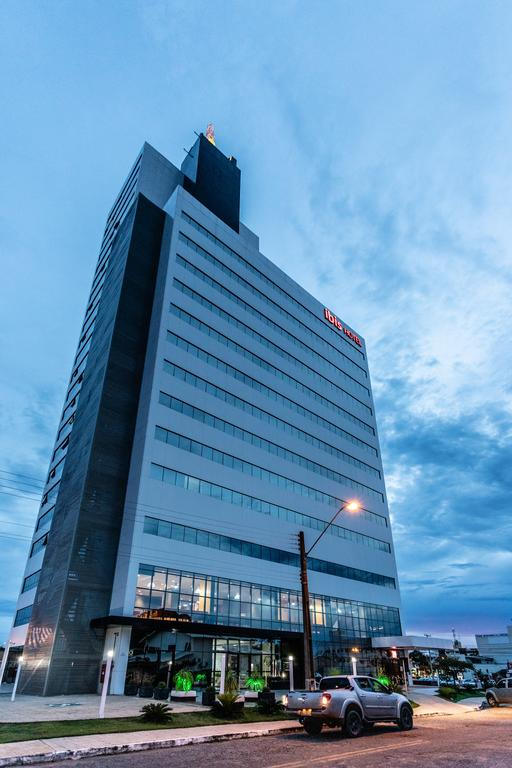
Vantagens:
O Ibis Palmas Avenida JK está situado em Palmas, na região de Tocantins, a 8 km da Estação Rodoviária de Palmas e a menos de 1 km do Palácio Araguaia. A propriedade dispõe de recepção 24 horas e restaurante. Pontos de interesse locais como o Espaço Cultural de Palmas e o Parque Cesamar ficam a 2,1 km e 2,6 km, respectivamente.
Victoria Plaza Hotel
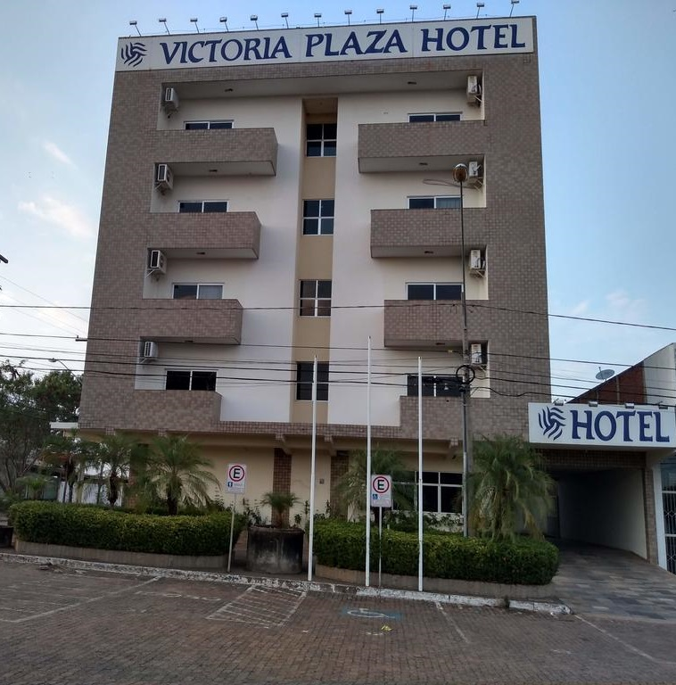
Vantagens:
Situado no centro de Palmas, o Victoria Plaza Hotel oferece acomodações com bicicletas gratuitas, estacionamento privativo gratuito e piscina ao ar livre. Todos os quartos possuem TV de tela plana com canais a cabo e banheiro privativo. Os quartos dispõem de ar-condicionado, vista para o lago, mesa e Wi-Fi gratuito.